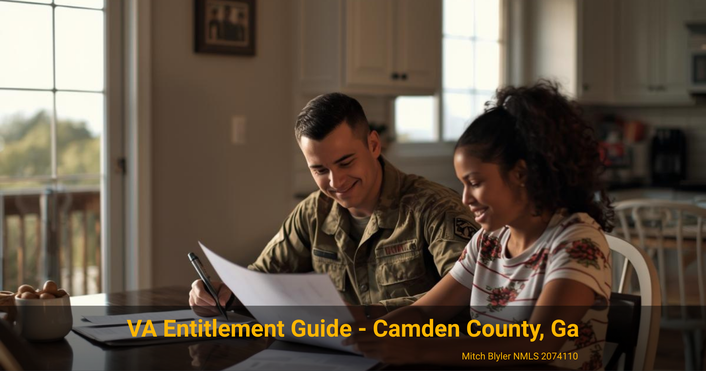

VA Loan Tips
How Much VA Entitlement Do I Have Left to Buy in Camden County?
For active duty service members and veterans buying in Camden County, GA
VA Loan Tips
For active duty service members and veterans buying in Camden County, GA
If you've used a VA loan before, a quick entitlement review can clarify how much home you may be able to finance next when buying in Camden County.

Many military families and veterans in Coastal Georgia have used their VA loan benefit before. When it's time to buy again—especially near Kings Bay Naval Submarine Base—one of the most common questions is how much VA entitlement remains available.
If you previously purchased a home with a VA loan or still own a VA-financed property, your remaining entitlement helps determine how much you may be able to borrow for your next home. Whether you're moving to Kingsland, St. Marys, or Woodbine, understanding this number can make planning your next purchase much easier.
VA entitlement is the portion of a loan that the Department of Veterans Affairs guarantees to a lender. This guarantee is what allows eligible service members and veterans to purchase homes with favorable terms, including the possibility of no down payment.
When you use a VA loan, part of your entitlement is tied to that mortgage. If the home is later sold and the loan is paid off, your entitlement can usually be restored. However, if you still own the property or converted it to a rental, some of that entitlement may remain in use.
For buyers relocating to Camden County or stationed at Kings Bay Naval Submarine Base, understanding this detail is important because it affects the maximum purchase price that may qualify for zero-down VA financing.
Home prices in Camden County vary depending on the area. Buyers looking in Kingsland or St. Marys may find different price points compared with properties closer to Woodbine or along the coast. Your remaining VA entitlement helps determine whether you can purchase with no down payment or if a partial down payment may be required.
This situation often comes up for military families who bought a home at a previous duty station and then received orders to Kings Bay. Instead of selling the previous property, some owners keep it as a rental. In that case, part of the VA entitlement remains tied to the existing loan.
If you still have entitlement tied up in another property, lenders will calculate the amount remaining to determine your potential loan limit without a down payment. Many buyers in Coastal Georgia are surprised to learn they still have enough entitlement left to purchase another home near Kings Bay, even if they kept their previous house.
Understanding this early can help you shop confidently for homes in Camden County and avoid surprises when making an offer.
The easiest way to determine your remaining entitlement is by reviewing your VA Certificate of Eligibility (COE). This document shows the amount of entitlement currently used and how much may still be available.

A mortgage professional can typically obtain your COE directly through the VA's automated system. Once the numbers are reviewed, it becomes much easier to estimate your buying power for a home in Camden County.
First, verify whether you still have an active VA loan. If you sold a previous home and paid off the loan, your entitlement may already be fully restored. If not, the lender will calculate how much entitlement is still available based on the existing loan balance and county loan limits.
Next, review your financial profile and home price range. Many service members relocating to Kings Bay find they still qualify for a zero-down VA loan on a new property, even if another VA mortgage exists.
Finally, confirm eligibility before house hunting. Knowing your entitlement and pre-qualification range helps you confidently search for homes in Kingsland, St. Marys, or Woodbine.
Or, just call me at (912) 270-5172.
Military relocations often create unique home financing situations. Service members transferring to Kings Bay Naval Submarine Base frequently arrive with an existing home from their previous duty station. That's where remaining entitlement calculations become important.
One common scenario is keeping a previous home as a rental property while purchasing another property in Camden County. In this case, part of the VA entitlement remains tied to the first loan, but many buyers still have enough remaining to qualify for another VA purchase.
Another scenario occurs when a previous home was sold but the entitlement was never formally restored. This can usually be resolved quickly by requesting restoration through the VA before buying again.
For military families moving to Coastal Georgia, reviewing entitlement early can simplify the entire homebuying process and help avoid delays once you begin touring homes.
Yes. The VA loan benefit can typically be used multiple times throughout your life. If your previous VA loan was paid off and the entitlement restored, you may be able to use the benefit again with full entitlement.
No. Some borrowers keep their current property and still qualify for another VA loan using remaining entitlement. Whether this works depends on how much entitlement remains and your financial qualifications.
The most accurate way is by reviewing your Certificate of Eligibility. A lender can usually obtain this document quickly and calculate the entitlement currently used and the amount that may still be available.
Yes. Remaining entitlement helps determine the maximum loan amount that may qualify for zero-down VA financing. If entitlement is partially used, the lender may calculate whether a down payment is required based on the purchase price.
If you're planning a move to Camden County or buying near Kings Bay, a quick entitlement review can help you understand your options before house hunting.
Download the Free VA Loan Guide →
Loan programs, eligibility requirements, interest rates, and closing costs vary based on individual circumstances, credit profile, property type, and market conditions. Every mortgage scenario should be reviewed on a case-by-case basis to determine the most appropriate structure.